发信人: zzmax (zzmaxu), 信区: outdoor
标 题: 2011年昱岭关探路报告
发信站: 饮水思源 (2012年11月30日12:32:59 星期五)
1. 路线简介：
昱岭关
昱岭关山脊位于杭瑞高速南侧，西踞古徽州的歙县，东接浙江临安，主要有搁船尖、雨伞
尖、大岭塔、1422峰、牵牛岗、晒谷坦等1400米以上的山峰数个。是继东西天目对穿后，
新的一脉五尖的挑战级路线。
时间：2011.11.18~2011.11.20
实际路线：老竹铺—浩川村—福泉村—搁船尖—白沙岭—板桥—雨伞尖—大岭塔—1442峰
—千亩田—大明村
2. 【地图制作手记】
1.导入数据
2.批量修改字体大小
3.导出bmp
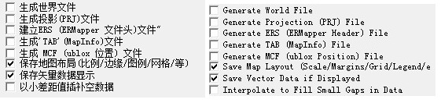 screen.width - 200){this.width = screen.width - 200}">
（选项中可以将各层数据都输出来，包括等高线，比例尺，经纬度）
大图等高距15
采样05
写真（按尺寸收费）
打印为两张图
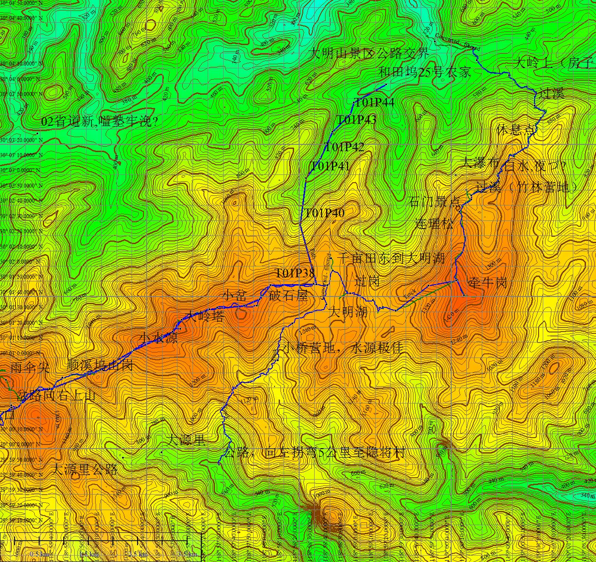 screen.width - 200){this.width = screen.width - 200}">
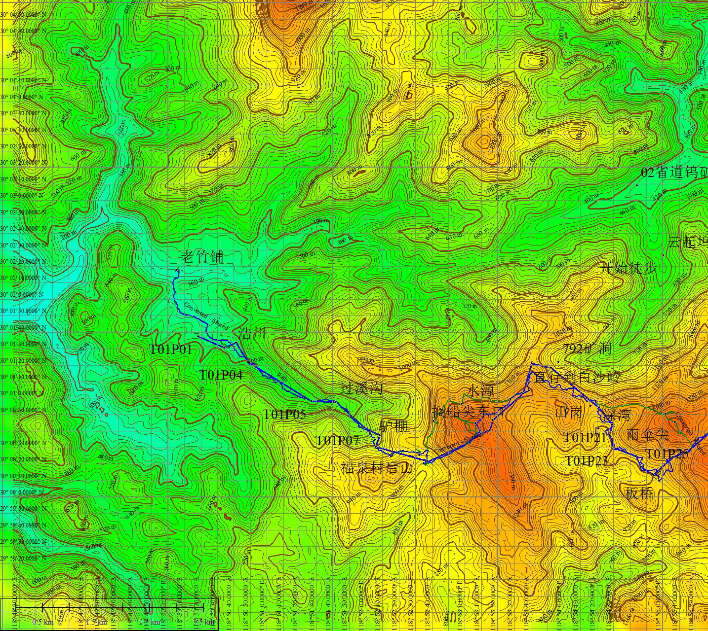 screen.width - 200){this.width = screen.width - 200}">
小图等高距50（但是25也可以）
采样08
A4彩图（5RMB）&过胶（1RMB）
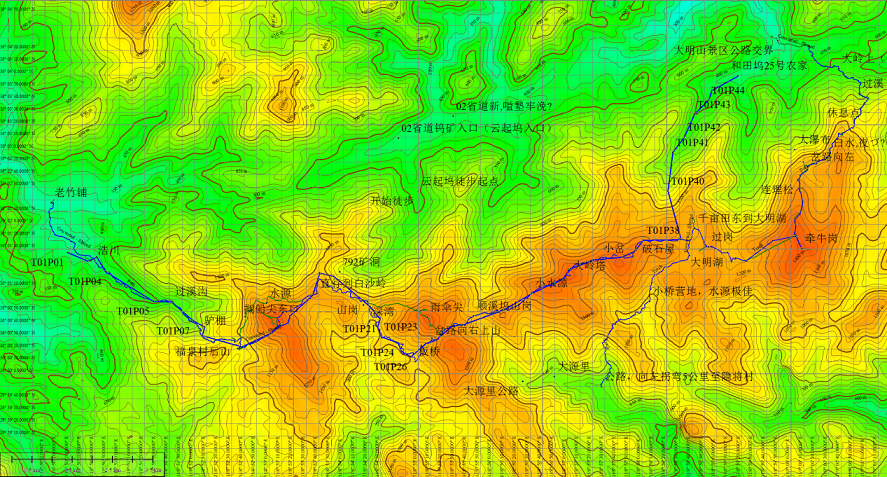 screen.width - 200){this.width = screen.width - 200}">
下面是hm弟弟的gps导出图：（蓝色为hm的航迹，红色为网上找的）
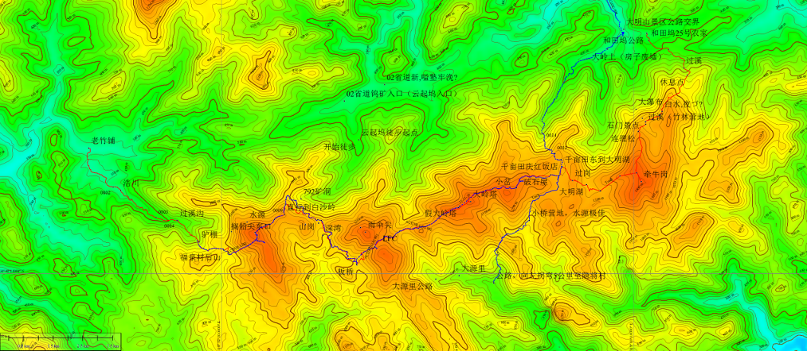 screen.width - 200){this.width = screen.width - 200}">
3. 探路过程：
1. 从老竹铺到浩川经过三个村子，公路的尽头便是浩川。可以通车到浩川（海拔300M）。
从浩川至福泉村一路经过断桥（至此约20~30分钟），过溪，驴棚三个标志。浩川到福泉大
概2小时，海拔上升约600M，水平距离约12KM。路线比较好走，没有什么难度，大都是田埂
路。岔路顺着航迹走便可。
2. 福泉村后山上搁船尖只有一条路，笔直走上去便可登顶，大约用时一小时。海拔上升5
00m左右。从福泉村左侧有一大路可绕过搁船尖走向板桥，到仓库大约有一个多小时。从搁
船尖下山的路不好找如果从顶上下去的话,在顶上的与电塔相反一侧有一明显小路痕迹。顺
着此小路如果不迷路大概一个小时不到可与大路汇合。下山的路比较陡，而且荆棘丛林比
较多，路径不明显，容易迷失方向。
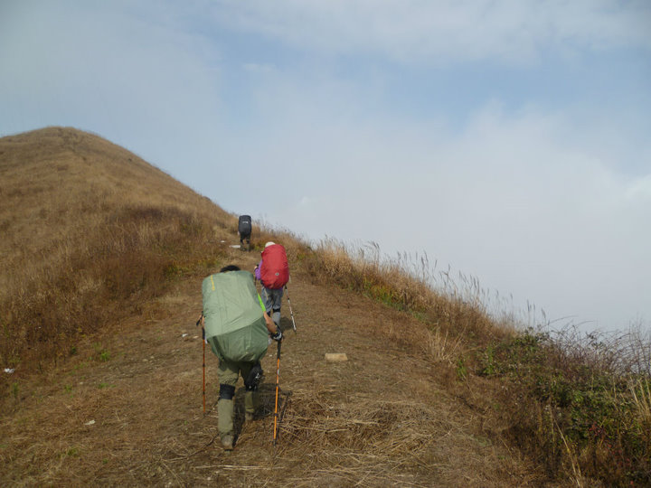 screen.width - 200){this.width = screen.width - 200}">
搁船尖顶
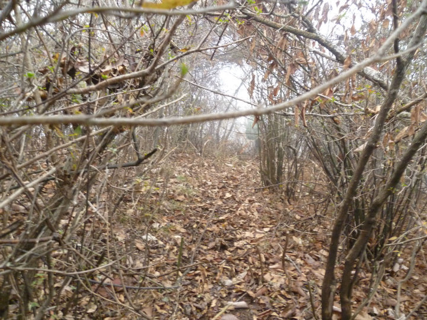 screen.width - 200){this.width = screen.width - 200}">
下山路
3. 下山与大路汇合之后，沿着此路大概走一个小时左右可到仓库。仓库是一水泥小屋制成
，背向仓库有三条路。直走十余分钟右拐可下山至板桥。经过探路，右边的路也可走至板
桥途中与直走的路汇合，稍微近一点。向左下山的路不知去向。
4. 从仓库至板桥大概需要一个半小时。途中会经过一个矿场和一个小村子。路均是好走的
山路。岔路较少。快要走至板桥村时有一岔道可以上雨伞尖。右拐至板桥。板桥有可以直
达杭州的包车，大概一百元一人。
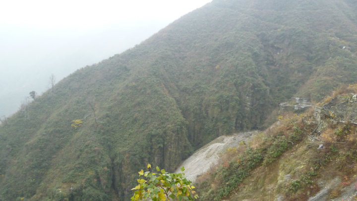 screen.width - 200){this.width = screen.width - 200}">
矿场
5. 板桥村后一条小路上山至垭口可见与雨伞尖顶下山路汇合。有一明显路径翻过垭口，顺
着此路走可走至大岭塔。从板桥至顺溪坞山岗的路较为好走，明显，岔路少。顺着东北方
向可以直达假大岭塔。但是到了顺溪坞之后，因为我们队伍走的是夜路，所以走岔的情况
时有发生。但是白天顺着路标—白条，可以较轻松地走至大岭塔。从板桥至大岭塔白天大
概需要两个小时不到。
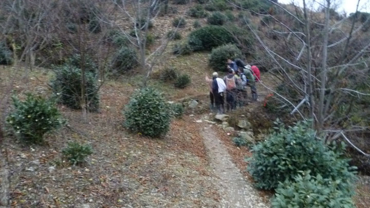 screen.width - 200){this.width = screen.width - 200}">
板桥上山路
6. 大岭塔至千亩田的路一路均有红色或白色布条作为路标，好走。下山后顺着山谷可直达
千亩田。用时1个半小时。走至千亩田时，有一三岔路口。左拐去大明山，右拐去大源里。
从千亩田管理站下山走至大明村大概两个小时。
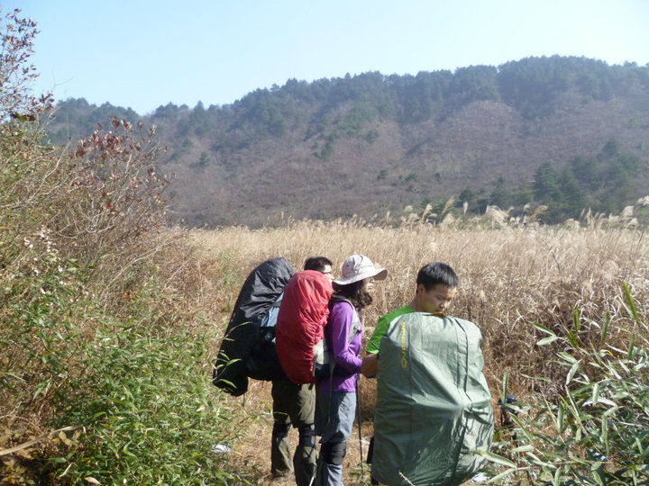 screen.width - 200){this.width = screen.width - 200}">
千亩田
4. 线路难度及强度：
难度：****+。从搁船尖下山那一段路径极为不明显，多处需要开路硬切。荆棘丛生，容易
刮伤和迷路。
强度：*****。第一天对于我们四人小队伍，最快12个小时到千亩田。第一天行程25km左右
，强度较大。第二天备选线路中，从千亩田南边下山大概四五个小时，从牵牛岗，翻越晒
谷坦到牛胫大概行程八个小时。
5. 营地：
老竹铺，浩川村内水泥地居多。浩川有一小学操场可供扎营，但是需要经村支书同
意。村外有较多田地可供扎营。农家水源。
板桥村有多处可以扎营。农家水源。
顺溪坞至大岭塔一路只有供两三个帐篷扎营的地方，无水源。
千亩田可供大队伍扎营，但是需要收取10元一顶帐篷营地管理费。
6. 植被情况：
一路多为荆棘矮小灌木林。特别是搁船尖山下以及大岭塔穿越一路。从搁船尖下山
路较陡，遇雨天难行。发生泥石流等地质灾害的可能性较小，属于典型的华南丘陵地貌。
7. 紧急情况下撤路线：
搁船尖绕行线路可以下撤至下牛坦。板桥可以直接撤回杭州。雨伞尖垭口右拐上山可
以通至梅川溪。千亩田可以下撤大明山景区。
8. 本次活动在行前准备、行进过程中的风险控制的成功之处及存在的问题：
行前准备：头灯（走夜路），水源的了解（预防在丛林里被迫扎营），天气预报（遇
极端天气取消），指南针，地图，手套以及防刮擦的衣服。
成功之处：在走夜路之时，每十分钟或者遇岔路定一次位，确保路线的正确以及最少
浪费体力与时间。在板桥村为预防在山里被迫扎营每人多灌1L水。在假大岭塔耗费时间探
路未果当即决定就地扎营，营地背风。
存在的问题：地图较小，不能准确定位。户外地图应至少准备1m*80cm（可拆分），
防止误差过大不能准确定位。交通查询未能尽善尽美，备用方案不够。行程安排过于紧张
，时间提前量给得不够，应该预留多一点时间周转。
9. 医药情况
昱岭关探路医药包信息统计
药品名称 用途 使用数量
创可贴 小创伤的外敷 10
医用纱布 包扎伤口 0
医用胶带 包扎伤口 0
绷带 包扎伤口 0
棉签 伤口消毒 0
碘伏 伤口消毒 0
碘伏棉球 伤口消毒 10
云南白药喷雾剂 治疗跌打扭伤 0
扶他林 缓解肌肉、软组织和关节疼痛，治疗关节炎 0
清凉油 用于感冒头痛，中暑，晕车，蚊虫蜇咬等 0
口服补液盐散 补充电解质 0
诺氟沙星胶囊 治疗肠道感染、腹泻 0
季胜德蛇药片 用于毒蛇、毒虫咬伤 0
酚氨咖敏片 用于感冒、发热、头痛 0
10. 医疗总结：
1. 发生轻中度的烧（烫）伤时，用冷水冲洗或浸泡（有冰块更好）至少一个小时以上（
充分冷却需三至四小时，理论上充分冷却后不会起泡和感染）。后涂上植物油或鸡蛋清或
蜂蜜或凡士林以保护创面。烧（烫）伤常常因为冷却过程中感觉不疼痛便停止冷却导致冷
却不充分而起泡。已起泡者切勿穿（擦）破，待下山后用注射器吸出液体为佳。已破者或
吸出液体后，应做消毒处理后暴露创面，保持干燥，待其结痂，避免遇水或接触异物（下
山后最好做包扎处理），防止结痂后形成痂下脓。
2. 鼻出血时，保持头部正常直立或稍向前倾姿势，举起对侧手臂；冷敷鼻根部；压迫止
血。
3. 长时间步行脚底起水泡未破时，先消毒水泡表面，针头过火消毒后刺破水泡，挤出积
液后抹干创面，包好。若水泡磨破最好不要揭去表皮，做消毒处理。预防：尽量不穿新鞋
，在容易起水泡的地方事先贴上创可贴。
4. 发生刺伤（取出异物后），擦伤，若伤口面积较小且浅，宜在伤口挤出一些血液
排出细菌和尘垢，消毒后包扎。若扎入的刺较浅可用指甲钳眉夹取出或小刀消毒划开表皮
，若刺入的异物较大且较深时不要轻易取出以免造成大出血或破伤风感染，保持伤口干燥
透气。
11. 装备情况
个人装备 情况 备注
背包 人手一只
睡袋 棉睡袋，温标0度左右 大岭塔营地风大，但一个棉睡袋足够应付
防潮垫 防潮垫打在包外容易被刮坏 盖好防雨罩或者加个收纳袋
防雨罩 全员配备 无论什么线路，无论下不下雨，都要带。防雨，防磨，防脏。
登山杖 使用情况良好 上山借力，下山保护膝盖，建议长距离，大负重线路必须携带。
外套/长袖T恤 搁船尖下山一段路荆棘丛生，只穿短袖会刮伤严重
冲锋衣 可替代雨披，部分配备 天气很好，冲锋衣挡风，可有可无
抓绒 全员配备 十一月份，抓绒还是要带的
雨披 无雨
头灯 使用情况良好 走夜路时大功率头灯很有必要
刀具 使用情况良好
登山鞋 部分配备 距离较长，最好全员配备
防水收纳袋 部分配备 可用来放置衣物、手机、相机等物品
12. 采购的食物及其他必备物品
项目 数量 单重/g 总重/g 单价/元 总价/元 备注（总结）
18日晚餐 米汉堡 4 6.4 25.6
年糕 2 10.46
水果罐头 4 227 908 4.8 19.2
19日晚餐 薄饼 1 400 400 7.9 7.9
拉面 4 280 1120 7.2 28.8
培根 2 12.1 24.2
肘花 1 300 300 20.3
生菜 6.18
浓醇高汤 4 0.75 3
黄瓜 2.17
胡萝卜 1.69
鸡蛋 6 9.8
娃娃菜 1.22
大葱 1.7
20日早餐 饼干 13.37
牛奶 2 3.45 6.9
玉米片 1 150 150 11.5 11.5
补充体力食物&水果 盐津葡萄 266 266 6.4
牛肉粒 27.6
橙子 4 5.81
南酸枣糕 10.35
配料等 生姜 5.73 另有小明带油、盐、糖等作料
甜酱 2 170 340 3 6
果珍 1 500 500 15 15
蛋花汤料 1 7.8
其他 口香糖 1 5.4
卫生纸 1 2.7
湿巾 1 3.5 3.5
垃圾袋 1 6.9
总计 297.18
13. 联系电话：
向导老王：15336556601
福泉村农家乐联系人潘木通。电话0559-6940443，13205598750
千亩田农家乐，联系人童道梅，电话：13858098343，13567156253
大明村农家乐，联系人：陈新进，电话：0571-63626657，15868170892
14. 交通
上海到老竹铺的交通：
上海到杭州：
火车、动车、高铁
杭州火车站到长途汽车西站：K49公交车，20站，耗时1h10min左右
杭州南站到长途汽车西站：专线，30min一辆，耗时40min左右
杭州到老竹铺方案一：
长途汽车西站到歙县方向的班车（可在老竹铺下）：下午14:50,15:50。耗时2h10min左右
。
杭州到老竹铺方案二：
长途汽车西站到昌化：
车站 发车时间 票价 联系
长途汽车西站 06:40 07:10 07:30 07:50 08:50 09:10 09:30 09:50 10:20 10:50 11:20
12:50 13:20 14:30 15:50 16:20 16:50 17:30 18:00 20元 电话:0571-85222237
地址:浙江省杭州市西湖区天目山路357号
昌化到昱岭关：
公交车，下午17:00最后一班
订票&服务电话：
长途汽车西站
0571-8522 2237、8522 1043
杭州汽车客运中心站
订票电话：0571-87650600 服务电话：0571-87650678 0571-87650679 0571-86046666
15. 【压队总结】
昱岭关探路压队报告
Zbg
『天气』
11.18晚，中雨，多云，没有星星。11.19 全天无雨，多云，气温12°C~17°C晚上星空可
见。11.20 阳光明媚，气温依然比较低8~18°C；在山脊，风比较大，感觉较冷，最好有防
风的衣服。
『营地概况』
第一天扎营在好心的大叔家里，浩川；然后从足铺步行到浩川。水是很容易得到的，在村
里应该可以找到比较好的空地扎营，由于天色已晚，第二天也忙着赶路，就没有寻找营地
。在村与村之间的路上基本上没有可以大队扎营的地方，途中的小村庄是可以大队伍扎营
的。
第二天晚上扎营的地方在大岭塔之前大概200m的样子，无水源，这块地估计能扎下三个帐
篷（但是得除去杂草），由于扎营的地方在山顶(山腰不太可能扎营)，风比较大，可以用
杂草/树枝放在帐篷四周挡风，在清凉峰拉练活动中，学到一种方法也比较靠谱：就是砍一
些芦苇或者其他和芦苇类似的东西来放在外帐与内帐中间，可以防风+保暖。到大岭塔了也
会有一块小地方估计也可以扎下两三顶帐篷。千亩田也是一块比较好扎营的地方，水源也
很好，但是有可能被收营地费，我们还差一点被收过路费==！（天朝国民太乱来了）
『压队总结』
刚到杭州西站，发现大地图掉了，这是这次活动最大的一个失误。请大家谨记这个错误的
示范。
11.18 从竹铺下车，步行到浩川，和我们一起下车还有一个从杭州回浩川的mm，然后就由
她带路到浩川了。如果没有人带路的话，可以问路边的人家。还有就是出行必备雨披/雨衣
/冲锋衣。晚上大家都有点小兴奋，加上屋子里比较暖和，睡袋里面有点热，九点后才基本
入睡，虽然第二天大家也都还不是很累。以后的视情况抑制小兴奋的苗头。
11.19 早晨五点起床，进餐餐，整装，六点左右出发。然后走错了出村的口子，晃了四五
十分钟后才发现，本来企图直接切到航迹上，未遂。于是原路折回，再重新出村。走到正
确的航道上，所以在做攻略的时候需要找一些标志性建筑，比如“从**村出发，走**km/m
in，会看到断桥/小木屋等”出村子过后基本上就是沿着明显的路走了，然后每隔半个小时
定一下位，或者在路口定位。
十点左右点到福泉村，然后上搁船尖，用了1小时30分钟左右。下山时在搁船尖顶附近走
错了岔路，于是又兜回来，寻找老乡说的那条不明显的路，所以在搁船尖呆的时间有近两
个小时，于是在此进午餐。下山的路路比较难走，一路上都是灌木丛，很容易把手划伤，
所以在提醒外出时，最好带一件长袖快干/ T 恤，防刮伤。走这种路迹不是很明显的路，
最好也是走一段定定位。在山上一种比较有效的判断自己方向是否正确的方法：1.用指南
阵判断自己所在山脊的延伸方向；2.把刚刚所得的方向和地图上正确航迹所在山脊的延伸
方向对比，可以看出，自己是否在正确的山脊上。（上路一般是沿着山脊，或者在山腰）
一路上都有些小水沟，尽量注意脚下，避免湿鞋（so,袜子&拖鞋必须）。走到板桥村的时
候，天色已晚，我们没有打算扎营，因为目标是大岭塔。走夜路的时候也需要定时进行定
位（10min一次）如果是队伍出去走夜路的话，压队应该要时时刻刻主义有么有人落下。各
个小组长也需要注意自己组员的情况。头灯亮的走前面，可以更加清楚的看清路况，比如
岔路等。走后面的同学在保持适当距离的情况下紧跟前面的同学，不要让队伍拉的过长，
偶尔可以用“5分钟原则”来调节气氛。
第二天起床天气大好，远处可以看见雨伞尖，然后发现我们帐篷旁边就是一棵系了标
记的树枝。昨晚还在这里徘徊了好久==！由于天气较好，可见度高，下山的路走得比较快
。而且路上也不是很多岔路。没多久就到了千亩田，然后在老王的指引下，顺利的到达大
明村。。。午餐！午餐！
16. 各家游记
细数昱岭关探路之挫事
Zzm
早上上完基电，翘了体育在寝室里打打包，等待约定好的11点30在三餐门口集合。提前
10分钟，一个人非常牛逼的站在食堂门口等zbg和敏妹的到来。路人眼神颇为凌乱，本以为
可以勾来几个妹子崇拜之欢心，却等来无数ws怪蜀黍的口水直流，令我立马离开理工类学
校的决心大大增加。
三人集合后发现时间不等人于是立马小跑准备追上时间的脚步，奈何我天生记忆力低下
忘记把bg兄的身份证放入口袋。打给寝室基友约于新体小门见面交货。 这是挫事之一。
接过身份证的那一刻，大家立马奔向的士，上车前往沪闵路剑川路公交车站搭前往虹桥
的公车。到了之后，发现时间还特么的加速了！~我们只得换辆小黑的好说歹说砍了五块钱
奔向虹桥。车上得知队长早已抵达车站觅食，惹得三基友无限内疚之情溢于言表，还感慨
城里交通之便利实乃乡下之所不能企及。这是挫事之二。
在距离动车出发的一刻钟，小黑的稳稳地停在了火车站门口。谢过飙车大叔之后我们冲
向安检。敏妹适时掏出了三个气罐。我挑了两个最重的放入冲锋衣口袋，面露微笑的朝安
检姐姐走去。应该是当天天气比较好空气污染物含量较低，我昨天才洗完澡身上刚涂的宝
宝金水起到了迷惑姐姐神经冲动的传递阻挡了神经递质的释放。在她整个动作延迟的时候
，我已经带着气罐冲入人群寻找队长。可是，进入我眼帘的竟是本刚哥哥端着电话焦急的
找寻队长的身影。只见他跑过来跑过去，嘴里念叨着B16入口。不知是否是因为我的眼镜是
国内不知名品牌生产的挡风玻璃的缘故，B16入口我淡定的看到了。我压低声音想给本刚哥
哥一点安全感：“我找到了，找到了。”可是，难道宝宝金水对男性也有魅惑功能？他还
是肾上腺激素过高，不停滴打了鸡血一样的问：B16在哪里呀在哪里。我不得以牵着本刚哥
哥的衣袖，带他转过一个弯便找到了队长。敏妹后脚即到。此时距离动车出发还剩7分钟。
此为挫事之三。
动车启动的那一刻，大家的心都放了下来。觉得此行终究算是踏上了正轨。望着窗外向
后驶去的城市，开始了探路的行程。一旦出发，便不会再回头看来路一眼。
一个小时的时间很快就过去了。杭州到了。四人迅速离开火车站因为从火车站到汽车西
站还需要一个小时十分钟的时间，而我们只有一个半小时剩下了。站外下起了小雨，杭州
人还会嚼槟榔令我大吃一惊。等到K49路公交车，bg上车没多久便把座位让给了一位大娘惹
得大娘对他母爱泛滥一路聊得欢快无比羡煞我等只有抱着大包相望无言的等待西站快快到
来。一个小时十分钟，情报很准确。前脚才下公车，后脚便跟上了拉客去风景区的司机。
一问正好是经过老竹铺的那班车，那就上了吧。站外打票虽然没有发票，也比赶不上强。
可能是本刚兄嫌众人下包休息等车心太平静不够刺激血压水平不够高，他爆出了史上此行
最为苦逼的事情：大地图遗失了。登时这消息的效果就见效了。我感觉我的血液流速猛的
加快，两眼充血忙让每个人在自己包里找找。未果，幸好咱还有几张小地图。看图，字迹
清晰可辨。那就凑合凑合使吧！只是约定回去不能告知任何人咱地图掉了。可惜天底没有
不透风的墙，为了给后人留给警示提个醒，咱还是老老实实说出了真相。希望以后没有人
再犯同样的错误。如果大地图掉了是真的很危险的。误差过大可能导致迷路，特别是这种
要走夜路的线，大地图的遗失可能会是一个致命的错误。这，也算是件挫事吧！
决定继续走放弃西湖两日游的计划之后，车马上便来了。四人交了钱上车。幸好碰见同
是四人去老竹铺的，车上拿出地图希望能指明方向。可惜那人是来看女朋友的，竹铺也倒
是第二次来了，可记忆却不如女朋友来得深吧！大多是一问三不知。看来只有下车再看情
况了。两个半小时的车程，车在高速路停了下来。钻过铁网，下到了竹铺村。正好遇见一
漂亮美眉回浩川。一路温柔得给我们带路，惹得这厮心里一阵小路乱撞竟一时失语不知该
如何搭讪，只知埋头前行。到了浩川，与美女拜别。走至一岔路问小卖部老板娘前方何处
可以扎营，老板娘竟然直接要我们在其家里扎营便可。她家正好有一仓库较为宽敞又温暖
，下雨天在里面搅基异常舒适。于是再一次感谢我党创造的好社会好时代，好人果然要比
坏人多啊！在老板娘的宽敞的仓库里，我们迅速开始第一晚的腐败。先煮米汉堡，然后是
炸年糕。队长英勇挑起重担来给我们炸年糕。一旁的bg也玩起了情调放起了功放，上面再
盖着一装满菜油的塑料瓶，顿感气氛微妙，再来点小啤酒，爽！可惜美好的时光总是短暂
，随着年糕的进一步金黄，体积也在慢慢变大。突然，“嘣”的一声年糕炸开了！此时，
离油锅最近的手长在队长身上。于是，大家开始忙乱起来了。Bg拿起锅盖朝油锅扔去，敏
妹拿出纸巾扔向队长的手，队长看见装满水的锅便将手塞了进去。都慌了。等队长冲洗过
后，我拿出药包给队长上药。几个水泡充满眼球着实令人心疼。年糕质量不好，今年打假
又会有新成果了。挫事之五便是如此。
草草收拾过后，为了第二天保存体力便都早早睡下了。一宿无语？No。躺下并不妨碍搅
基。大家安静片刻过后便开始了卧聊。聊得欢快之时竟忘记了时间，略有睡意看了看表已
然11点半。责令大家五分钟之内睡着过后，一宿便真安静地过去了。只是队长的手还在疼
着。
第二天四点五十九，我的闹钟准时响起却不是第一个令我很沮丧。起来收拾塞睡袋，吃
早点六点准时出发。天露鱼肚白。与老板娘告辞过后便一头扎向前行的路。头也不回。路
上碰见几个路人也没有问路，自信昨晚从老板娘得知的情报异常靠谱。出村从山腰望向浩
川，看见南边似乎有一更像路的山谷。定位，准确。也好，继续前行。此时距返回浩川还
有一个半小时。顺着山路往前走，定位也越来越偏。昨晚从老板娘那大听到的路标竟一个
也没经过。八点，在确定将越走越偏没有返回航迹的可能的时候决定返回。路上因为地图
过小，以为航迹就在山谷的另一侧山腰想要试图过去，奈何山路过于陡峭。好不容易切过
去发现还是一条不归路，最终下定决心走回浩川。七点半，到达浩川。乡亲们在看到我们
走错路返回时非常热情给我们指路。原来真心一开始便走错了。路上最珍贵的是路人，最
傻逼的是碰见路人还不问路。不要以为路人有很多，错过了再也没机会了。挫事之六浪费
了我们一个半小时的青春与活力。还是如此傻逼的浪费。
没有休息，立马从浩川出发。沿着航迹一直前行，路遇断桥，过溪，驴棚。两个小时，
到达福泉。听到福泉的狗叫，那一刻，大家会心的笑了。福泉村口，农家乐老板老潘在等
待一队人从十关九不过景区过来。得知我们今晚的营地是千亩田，老板便催我们赶紧上路
。祝好之后就此拜别，不知是否后会有期。选择了登搁船尖顶的路，一个小时之后便上了
顶。在福泉问老潘下山路线时，他说在顶旁有一岔路，顺着小路下山半小时后与大路汇合
。山顶雾大，能见度低。于是找了一条山腰上的小路往北前行。在不知道山脊走向的情况
下，走了十分钟定位发现已然偏离航迹。再往前一探更是会错上加错。决定走回岔路口，
给老潘打电话。老潘细心指点了一番。奈何雾实在太大，小路又太不明显。我与敏妹找路
大概花了将近一个小时的时间。最后还是找到顶上下山的路，与老潘说的小路又不相同。
但是听老潘说可以下以及航迹上有一条顶上下去的线。我们吃过午饭便下山了。11点一刻
到搁船尖顶，1点半从搁船尖出发。荆棘丛生，每个人都被刮伤了。下山的路又小又陡还有
很多带刺的荆棘。走到鞍部大概花了半小时的时间。从鞍部到与大路汇合又花了半个小时
。路径不明显，几次偏离航迹硬切回来。一个小时终于到了大路。说是大路，也就是路径
稍微明显一点像条路而已，不过4，50公分宽。此乃挫事之六。
下到大路，已是两点半了。大抵一个小时，到了仓库。三岔路口，问老潘，说前行可通
往板桥。Bg过去探路，山脊走向与地图一致。敏妹看到的路回来听起来也不那么靠谱。于
是决定继续听老潘的往前走。结果后来发现其实敏妹那条路可能会更近一点。一路上经过
一个矿场和两三户人家的小村庄，赶上一对要去板桥的夫妇。问得从小村庄附近到板桥还
需1个小时，从板桥到大岭塔只需一个半小时，心情大好。决定加紧步伐朝板桥出发。只是
无论我们速度多快，背着重物的老人还是如影随形，信心打击极大。5点过几分，天色已晚
。终于到达板桥。队长在得知协会没有人来过昱岭关之后放心的给sx发时间节点。装满水
，从老乡家偷了一块刚烧好的红烧肉，补充完体力拿出头灯便上了路。敏妹头灯功率最大
走最前面带路。我第二，队长第三，bg压队。从板桥上山大概四十分钟到达垭口。看地图
“岔路右拐上山”。左边是雨伞尖下来的路，右边是一个小山头。以地图信息为准便上山
了。刚走没多远便发现不对劲像是下山的路而不是顺着山腰走。便打道回府到垭口仔细找
路。路就在雨伞尖下来的路的旁边。定好闹钟，十分钟闹一次定一次位。还好路径明显且
前几天才有人劈过路。行进速度还算快。眼看着就要到大岭塔了，可是无论是顺着地图上
的东北方向走还是沿路走，最后都是死道。主要还是夜路的缘故，路径不明显。极其容易
走岔，如果没有敏妹大功率头灯，那夜路是不可能走下去的。几经走岔，再几经走回航迹
，曲折走到假大岭塔。再往前行，实在是无路可走。雾也越来越大了。一看时间，已是九
点半。不早了，先前决定的到大岭塔农家休息的事还是算了吧。这块正好有一较为宽敞且
背风的营地。腐败腐败就休息吧！
下包的速度总是最快的。几下搭好帐篷钻进去，开始下面卷大饼。Bg煎蛋、肘花；敏妹
切菜；队长下面；我吃。分工异常明确，效率也很高。大家三下两下吃完睡觉。这一晚可
比前一晚睡得快。安安稳稳的闹钟就响了。呃，七点半的闹钟。因为前一天晚上问好老王
，从大岭塔到千亩田大概需要一个多小时，从千亩田到老王家只要两个小时。所以，煮牛
奶，喝玉米片，拍照~九点半，我们出发啦！出发之前遇到一个打猎的大叔，很好奇他到底
打没打到。几人商量是否在山里打只野鸡到老王家去炖着吃，可惜我吨位太大小动物总是
被吓走。第二天的路也是不好分辨。落叶盖住路，看久了眼花。走走停停，到了一个小时
左右，千亩田距离我们还有两三公里。于是我带着大家，看准地图之后，顺着小溪下山谷
一路飞奔。11点10分到达千亩田。
在千亩田小溪旁晒晒太阳，洗把脸。看着朱元璋屯兵之处，心里顿觉大爽！第一天走到
搁船尖下山时觉得这次探路完不成任务的苦逼心理早就忘得一干二净~~走至三岔路口，忘
记以前是从哪里下山忘记保护站设在哪里。于是右拐向南走，结果明显偏出航迹。返回，
十分钟后便到了保护站。路遇一老人，以为能热心指路。哪知是要来收管理费的。有可能
是怕我们人多势众，一番争论之后我们不管他便沿着屋后小路下山了。一路狂扫线，速度
很快。经过几处记忆犹新的地方感觉马上就要声泪俱下，忍住情感堤坝的崩溃，继续往前
走。走至hyp发飙之处，又聊起了上次大明山。唉，引起一行人的感慨。走至小yh出生地，
感慨老王家已经喝了半年多的富含小yh 的水了身体是否还健康。拍完照，两点四十五顺利
到达老王家。吃鸡，喝酒，一顿酒足饭饱之后老王更是骑摩托把我们送到白果搭车去昌化
。结果队长大腿和bg胸肌完美组合赢得了偶遇大叔的芳心，决定让我们搭顺风车到上海。
真真是路遇贵人啊！挫事虽然多，但是一路磕磕绊绊竟也走过来了。还遇上这等好事，
好心情一路延续到了上海。回程的路上，敏妹一直望向窗外。感慨人长大了终究是会有心
事。和队长聊天，一路也还是心疼手上越来越大的泡。只有bg哥哥被我们抛弃在了另外一
辆车上与阿姨和大叔呼呼大睡。
到了莲花路，我们下车。感慨十几年过后也要像这些人一样让人搭顺风车，前人栽树后
人乘凉。到了上海进了城感慨过后肚子适时滴响了。几人幸福的钻进小饭馆high了一顿。
小队伍的昱岭，我们的昱岭。这次的挫事，以后不会发生，但是以后看到这篇游记大抵
也会会心一笑吧。下次背满一个星期的食物就在昱岭关扎营了，看日出日落，吹吹山风。
星星闪的时候蟋蟀也在叫，小溪淌着想象里面的鱼肉质鲜嫩如果没有遭受小yh 的毒害的话
。这种生活，真是令人向往啊！
举身赴清池，自挂东南枝，细菌试验过后捏断脖颈，随便找块地埋了这几种死法大概也
代表我们这次探路的约定吧。死法都约定好了，那我们的基友之情呢？大概也只有等到死
的那一天才会结束吧。你说呢？
绝非探路报告的报告
Xyj
为记录行走时所想而写下游记，太隐晦了旁人看着了然无趣，太抒情了自己都感觉无地自
容的矫情，好在即便多年后提起昱岭关我都仍能记得当时的心境，这样就够了。出行是一
剂极有效的安眠药，一觉醒来发觉自己处在深山老林，满足得很。
明知无法逃开却仍抱着消失的想法，矫情，明知有该做的事却总以情绪为借口，矫情，所
以谈什么心情，谈什么逃离，倒不如收拾好皮囊踏踏实实地走起来。就像ZBG说的，咱都走
起来，什么都会有的，虽是套用的歌词，但在出发之前还是把我感动得一塌糊涂，感慨学
过大学语文的人着实不一样。
带着要散心的心情，体力弱得不行，接连多天失眠脑子又不好使，三个基友把该准备的都
准备好了，只留得我一个人感激不已，至于怎么走，自然随意了。
拖拖拉拉把时间搞得那么急还担心赶不上车，矬死；还没到出发点就把大地图搞丢，矬死
；还没出村就把方向搞错，矬死；走了快一个小时才发现偏离航迹，矬死；走了十五个半
小时还没到营地，矬死；七点起床九点半才拔营，矬死。
巴士偶遇后来给我们带路来自浩川村的漂亮妹子；村民主动开房招待；搁船尖耽搁了半辈
子找不到路忽的一阵妖风把雾吹散；走好几个小时夜路方向基本是对的；白果村口ZBG拿大
腿勾搭上回上海的顺风车；幸运得快成狗了。
头天晚上炸年糕爆锅了左手直接伤残，苦逼；搁船尖下来走的野猪都不走的路，刺激；无
奈扎营密林但第二天发现那无疑是最好的营地。
写不下去了，这不是探路报告。
刹那！~游记
记四基友
Hm
--自挂东南枝、举足赴清池、埋入深山、细菌试验
交通准备怠慢了，我认错。
想象着，穿着新买的登山鞋，一路狂奔。
刚出门，说好的公交车无奈变成的士，下次再不会这样啦！~本刚哥哥一路的幽默的话语
，让我们顺利通过安检，安检员竟然无视了气罐~队长已等候多时。
坐高铁、坐班车都仅仅赶上了，我说我们把时间安排得太紧，致民却说这都是细心地准备
。倒是班车上的大哥和带路的妹子人都很好~！浩川村的大叔人真好，第一晚不用搭帐篷。
队长的手，我多么希望那时端锅的是我。
没有大地图，就有了考验，但是早晨山上的风景的确不错啊！不过上山一会儿就萎掉这个
说不过去了。搁船尖不愧是风景名胜，只有上山没有下山的路，而我们所走的所谓梦游之
路，连野猪都怕了吧。在致民和我找路的时候，本刚哥哥和队长在那里玩过家家~
仓库，是个好地方，却让我们有点迷茫~！
一路到板桥村，一直想甩掉的大叔二人却像山神一样跟在后面。板桥村的那块瘦肉，味道
还不错。嘿嘿，小民~！
夜路不是那么好走，跟追伐木的痕迹前行，一路还算顺利，最后却在大岭塔的旁边假大岭
塔上迷路了，无奈身心疲惫，大家一直同意扎营丛林。
腐败的一个晚上，实在是有些浪费。
一晚上睡得很好的样子。
一路上居然又迷路过，还好及时发现，返回走入正道。
路过千亩田时，一大叔居然要收我们管理费，当时我就笑了，还真的占山为王了。
路上的破亭子，石坡。致民带领我们狂奔~~有谈起小严皓的事情。本刚哥哥在石头大坝那
里的照相时的跳来跳去，可以算是表演了。想一想下次大明时队长还敢不敢过那条小溪呢
囧。
老王已经忙得不行了，午饭很香的样子。
队长勾搭上的顺风车真的是一个完美的结局。
最后，探路队员合照：
Zzm、xyj、zbg&hm~
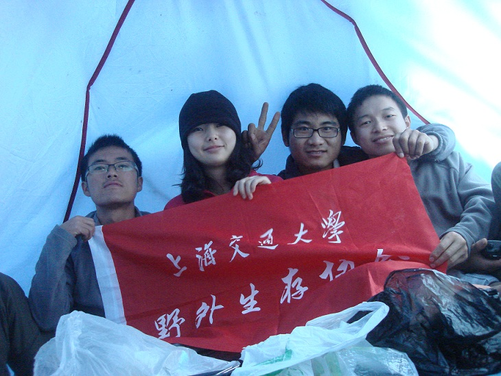
2011.11．30
--
悲伤也好，快乐也好，走出户外就是好
※ 来源:·饮水思源 bbs.sjtu.edu.cn·[FROM: 59.78.44.30]
※ 修改:·zzmax 于 2012年11月30日12:35:34 修改本文·[FROM: 59.78.44.30]
※ 修改:·zzmax 于 2012年11月30日12:46:18 修改本文·[FROM: 59.78.44.30]
|